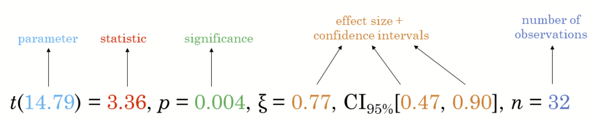
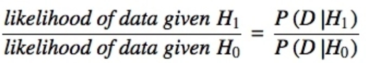
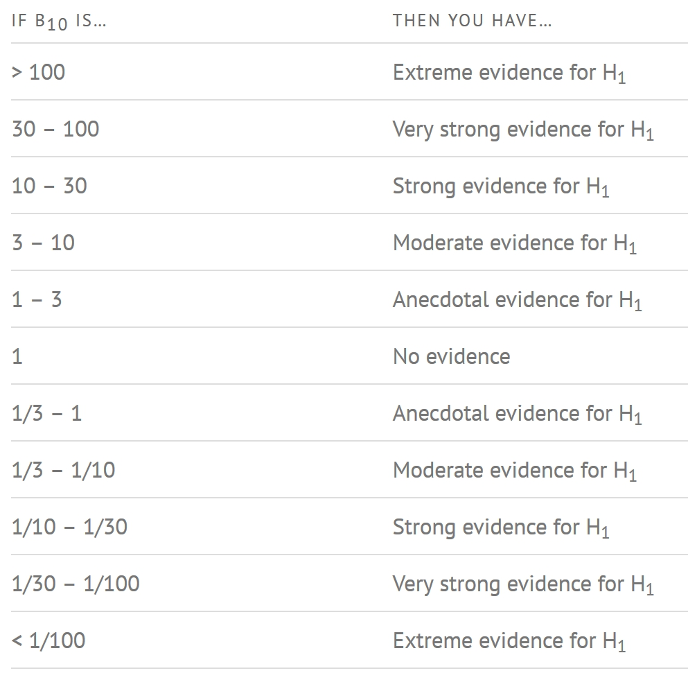
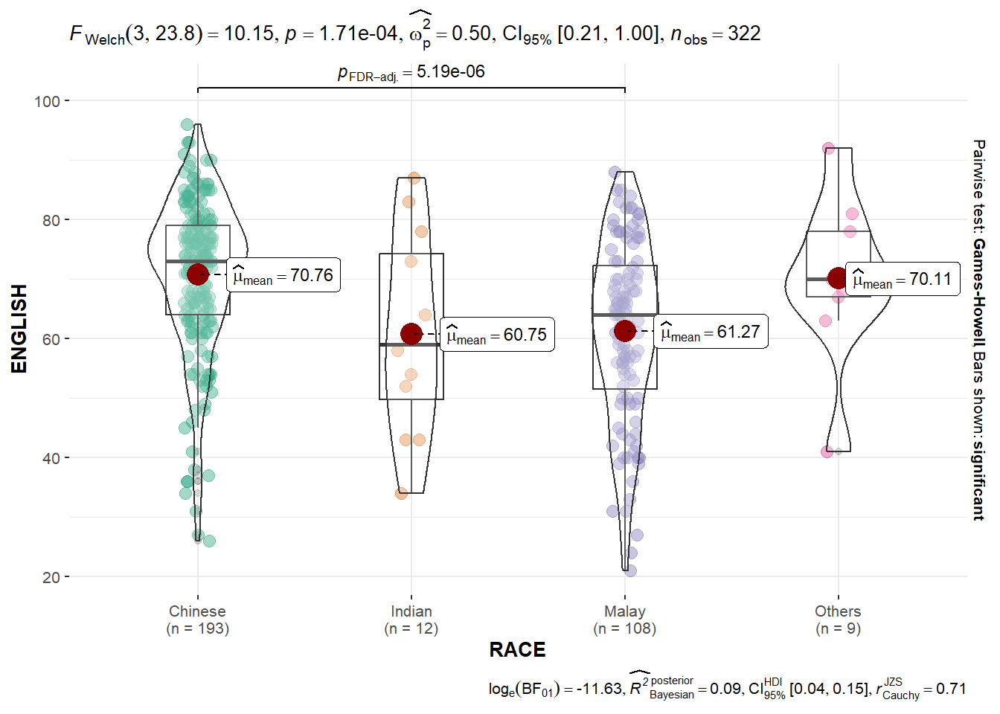
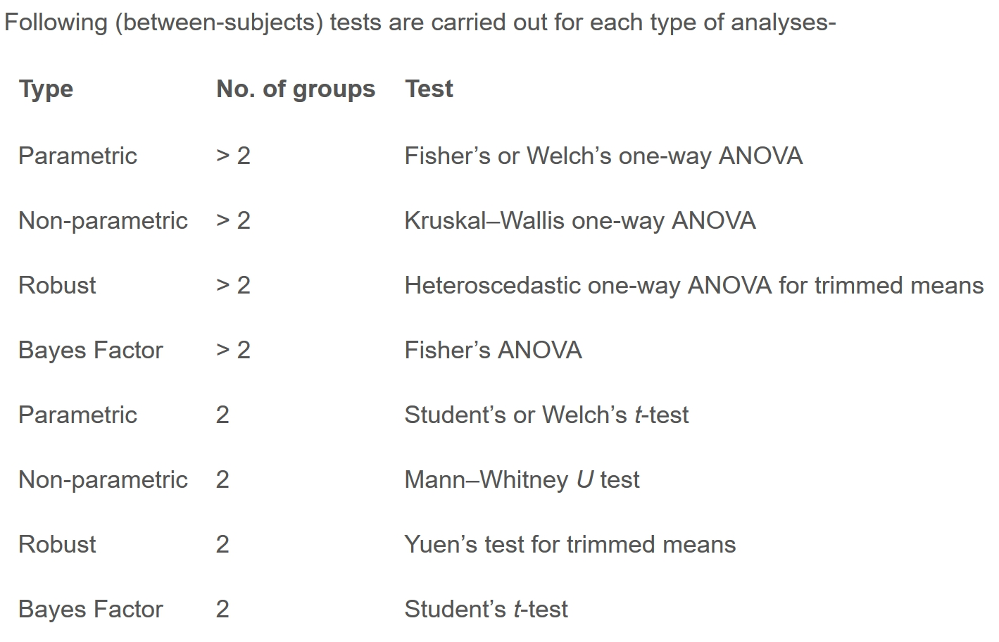
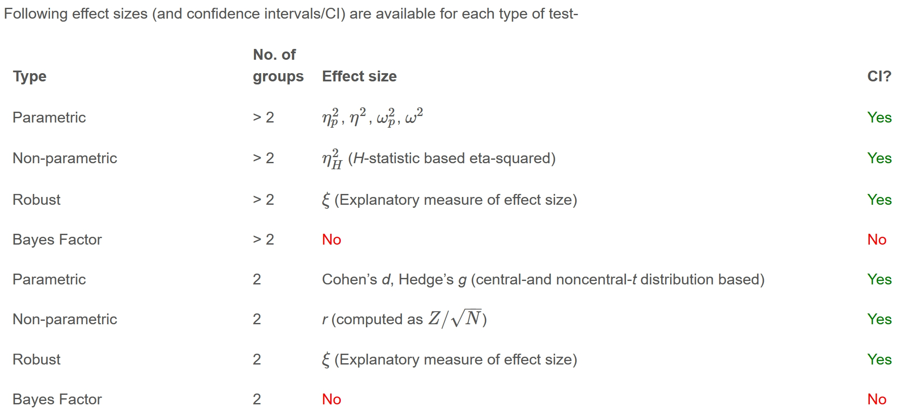
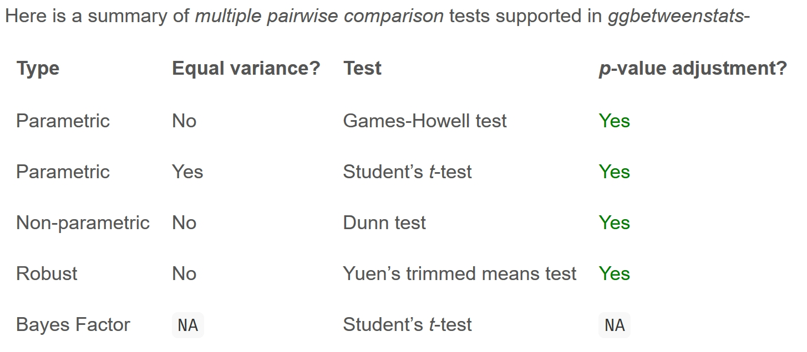

5 Visual Statistical Analysis
Hands-On Exercise for Week 4
(First Published: May 4, 2023)
5.1 Learning Outcome
We will learn to create visual graphics with rich statistical information, visualise model diagnostics, and model parameters.
5.2 Getting Started
5.2.1 Install and load the required r libraries
Install and load the the required R packages. The name and function of the new package that will be used for this exercise are as follow:
ggstatsplot: offers various types of statistical plots and functions for statistical tests such as t-tests, ANOVA, correlation tests, and regression analysis
performance: offers functions for computing model evaluation metrics for model evaluation and comparison
parameters: provides for managing complex experiments with many parameters and for automating parameter tuning in machine learning workflows
see: provides a host of functions and tools to produce a range of publication-ready visualizations for model parameters, predictions, and performance diagnostics
5.3 Visual Statistical Analysis with ggstatsplot package
ggstatsplot is an extension of ggplot2 package for creating graphics enriched with statistical test details. It:
Provides alternative statistical inference methods by default.
Follows the best practices for statistical reporting. For all statistical tests reported in the plots, the default template abides by the APA gold standard for statistical reporting. For example, here are the results from a t-test:

5.3.1 Import the data
We will be using the same exam scores data-set that was featured in my Hands-On Exercise for Week 1.
5.3.2 One-sample Mean Test
We use gghistostats() to to build an visual of one-sample test on English scores.
In the following case:
type = "bayes": specifies the type of statistical test to perform on the data to generate the interval estimate. In this case, it is a Bayesian analysis, which provides a posterior distribution of plausible values based on prior knowledge and observed data.test.value = 60: specifies the value for the null hypothesis that will be used to calculate the probability of the observed data. In this case, it is 60, which assumes that the average English score is 60.
Show the code

Unpacking the Bayes Factor
A Bayes factor is the ratio of the likelihood of one particular hypothesis to the likelihood of another. It can be interpreted as a measure of the strength of evidence in favor of one theory among two competing theories.
The Bayes factor gives us a way to evaluate the data in favor of a null hypothesis, and to use external information to do so. It tells us what the weight of the evidence is in favor of a given hypothesis.
When we are comparing two hypotheses, H1 (the alternate hypothesis) and H0 (the null hypothesis), the Bayes Factor is often written as B10. It can be defined mathematically as:

The Schwarz criterion is one of the easiest ways to calculate rough approximation of the Bayes Factor.
How to interpret Bayes Factor
A Bayes Factor can be any positive number. One of the most common interpretations is this one—first proposed by Harold Jeffereys (1961) and slightly modified by Lee and Wagenmakers in 2013: 
5.3.3 Two-sample Mean Test
Next, we use ggbetweenstats() to build a visual for two-sample mean test of Maths scores by gender. This generates a combination of box and violin plots along with jittered data points for between-subjects designs with statistical details included in the plot as a subtitle.
In the following case:
type = "np": specifies the type of test to be used to compare the groups, in this case, a non-parametric test (Wilcoxon-Mann-Whitney test).messages = FALSE: specifies whether or not to display informative messages about the statistical test being performed.

5.3.4 One-way ANOVA Test
We can also use ggbetweenstats() to build a visual for One-way ANOVA test on English score by race.
In the following case:
type = "p": specifies the type of test to be used to compare the groups, in this case, a parametric test (one-way ANOVA).mean.ci = TRUE: specifies whether or not to display confidence intervals for the group means.pairwise.comparisons = TRUE: specifies whether or not to display pairwise comparisons between the groups.pairwise.display = "s": specifies the format of the pairwise comparison display, in this case, “s” for compact letter display.p.adjust.method = "fdr": specifies the method used for p-value adjustment for multiple comparisons, in this case, false discovery rate (FDR) correction.
Show the code

Summary of tests with ggbetweenstats
  
5.3.5 Significant Test of Correlation
We can use ggscatterstats() to build a visual for Significant Test of Correlation between Maths scores and English scores. This creates a scatter plot with overlaid regression lines between the variables “MATHS” and “ENGLISH” in the “exam” dataset.
In the following case:
marginal = TRUE: specifies whether or not to display marginal histograms or density plots along the axes of the scatter plot. In this case, marginal plots are not displayed.
5.3.5 Significant Test of Association (Dependence)
First, we bin the Maths scores into a 4-class variable using cut() function.
We use ggbarstats() to build a visual for Significant Test of Association between the categorised Maths scores and gender.

5.4 Visualise Models
In this section, we will learn how to visualise model diagnostic and model parameters.
5.4.1 Import the data
Toyota Corolla case study will be used and the datat-set is imported. We will build a model to discover factors affecting prices of used-cars by taking into consideration a set of explanatory variables.
# A tibble: 1,436 × 38
Id Model Price Age_08_04 Mfg_Month Mfg_Year KM Quarterly_Tax Weight
<dbl> <chr> <dbl> <dbl> <dbl> <dbl> <dbl> <dbl> <dbl>
1 81 TOYOTA … 18950 25 8 2002 20019 100 1180
2 1 TOYOTA … 13500 23 10 2002 46986 210 1165
3 2 TOYOTA … 13750 23 10 2002 72937 210 1165
4 3 TOYOTA… 13950 24 9 2002 41711 210 1165
5 4 TOYOTA … 14950 26 7 2002 48000 210 1165
6 5 TOYOTA … 13750 30 3 2002 38500 210 1170
7 6 TOYOTA … 12950 32 1 2002 61000 210 1170
8 7 TOYOTA… 16900 27 6 2002 94612 210 1245
9 8 TOYOTA … 18600 30 3 2002 75889 210 1245
10 44 TOYOTA … 16950 27 6 2002 110404 234 1255
# ℹ 1,426 more rows
# ℹ 29 more variables: Guarantee_Period <dbl>, HP_Bin <chr>, CC_bin <chr>,
# Doors <dbl>, Gears <dbl>, Cylinders <dbl>, Fuel_Type <chr>, Color <chr>,
# Met_Color <dbl>, Automatic <dbl>, Mfr_Guarantee <dbl>,
# BOVAG_Guarantee <dbl>, ABS <dbl>, Airbag_1 <dbl>, Airbag_2 <dbl>,
# Airco <dbl>, Automatic_airco <dbl>, Boardcomputer <dbl>, CD_Player <dbl>,
# Central_Lock <dbl>, Powered_Windows <dbl>, Power_Steering <dbl>, …5.4.2 Create a Multi-variate Linear Regression Model
We use lm() function of R Base Stats to calibrate a multi-variate linear regression model.
Show the code
Call:
lm(formula = Price ~ Age_08_04 + Mfg_Year + KM + Weight + Guarantee_Period,
data = car_resale)
Coefficients:
(Intercept) Age_08_04 Mfg_Year KM
-2.637e+06 -1.409e+01 1.315e+03 -2.323e-02
Weight Guarantee_Period
1.903e+01 2.770e+01 5.4.3 Model Diagnostic: Check for Multicolinearity
We use check_collinearity() of performance package to conduct the test.
# Check for Multicollinearity
Low Correlation
Term VIF VIF 95% CI Increased SE Tolerance Tolerance 95% CI
KM 1.46 [ 1.37, 1.57] 1.21 0.68 [0.64, 0.73]
Weight 1.41 [ 1.32, 1.51] 1.19 0.71 [0.66, 0.76]
Guarantee_Period 1.04 [ 1.01, 1.17] 1.02 0.97 [0.86, 0.99]
High Correlation
Term VIF VIF 95% CI Increased SE Tolerance Tolerance 95% CI
Age_08_04 31.07 [28.08, 34.38] 5.57 0.03 [0.03, 0.04]
Mfg_Year 31.16 [28.16, 34.48] 5.58 0.03 [0.03, 0.04]
5.4.4 Model Diagnostic: Check Normality Assumption
There is the check_normality() function to conduct the test.

5.4.5 Model Diagnostic: Check model for homogeneity of variances
We can use the check_heteroscedasticity() to do this check.

5.4.6 Model Diagnostic: Complete Check
Thank goodness! There’s also a check_model()function to conduct the diagnostic tests discussed above.
5.4.7 Visualise Regression Parameters
We can use plot() function of see package and parameters() of parameters package to visualise the parameters of a regression model.

Alternatively, we can use ggcoefstats() of ggstatsplot package to visualise the parameters of a regression model.

\(**That's\) \(all\) \(folks!**\)